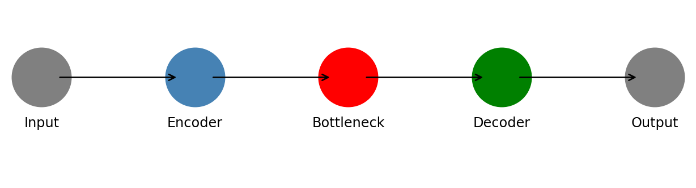
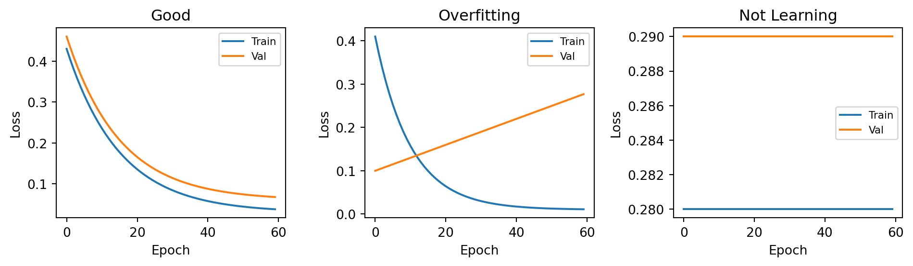
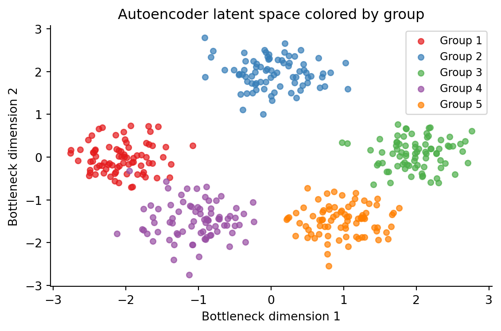

1 Autoencoders for Dimensionality Reduction: A Guide for Statisticians
2 What Is an Autoencoder?
You already know PCA: compress many columns into fewer that still capture the important patterns. An autoencoder does the same thing using a neural network — so it can find curved, nonlinear patterns that PCA cannot (Nalisnick, Smyth, and Tran 2023).
The network has three parts:
- Encoder — compresses your data into fewer numbers
- Bottleneck — the compressed version (this is what you keep)
- Decoder — reconstructs the original data during training only
The network trains by trying to reconstruct its own input. Because everything must pass through the narrow bottleneck, it is forced to learn a compact summary of the data.
3 Should You Use an Autoencoder?
Use PCA if: your dataset is small, you need interpretable components, or you want something fast with no training.
Use an autoencoder if: PCA reconstructions look poor, your data is complex (images, sensor readings), or you have at least a few thousand rows.
Use t-SNE or UMAP (McInnes et al. 2018) if: your only goal is a 2D or 3D visualization.
Tip
When in doubt, try PCA first. If it works, use it.
| PCA | t-SNE / UMAP | Autoencoder | |
|---|---|---|---|
| Finds nonlinear patterns | No | Yes | Yes |
| Output usable in a model | Yes | No | Yes |
| Needs training | No | No | Yes |
| Components have meaning | Yes | No | No |
4 Setup
4.1 Create an Environment
conda create -n ae-env python=3.10
conda activate ae-env
Important
Every time you open a new terminal, re-run the activate command before working.
4.2 Install Packages
PyTorch (CPU — works on any machine):
pip install torch==2.2.0 --index-url https://download.pytorch.org/whl/cpu
pip install numpy==1.26.4 pandas==2.2.1 scikit-learn==1.4.1 matplotlib==3.8.3Keras / TensorFlow (Windows or Linux):
pip install tensorflow==2.15.0
pip install numpy==1.26.4 pandas==2.2.1 scikit-learn==1.4.1 matplotlib==3.8.3
Warning
Mac with M1/M2/M3? Use tensorflow-macos==2.15.0 and tensorflow-metal instead.
4.4 Set Random Seeds
Put this at the top of every script:
PyTorch:
import random, numpy as np, torch
random.seed(42); np.random.seed(42); torch.manual_seed(42)
torch.backends.cudnn.deterministic = True
torch.backends.cudnn.benchmark = FalseKeras:
import os, random, numpy as np, tensorflow as tf
os.environ['PYTHONHASHSEED'] = '42'
random.seed(42); np.random.seed(42); tf.random.set_seed(42)5 Prepare Your Data
- All numeric — encode categorical columns first
- No missing values — impute before training
- Scaled to [0, 1] — neural networks are sensitive to scale
Important
Always split before scaling. Scaling first leaks validation information into training.
from sklearn.preprocessing import MinMaxScaler
from sklearn.model_selection import train_test_split
X_train, X_val = train_test_split(X, test_size=0.2, random_state=42)
scaler = MinMaxScaler()
X_train = scaler.fit_transform(X_train)
X_val = scaler.transform(X_val)6 Build and Train
6.1 PyTorch
import torch, torch.nn as nn
from torch.utils.data import DataLoader, TensorDataset
class Autoencoder(nn.Module):
def __init__(self, input_dim, k):
super().__init__()
self.encoder = nn.Sequential(nn.Linear(input_dim, 32), nn.ReLU(), nn.Linear(32, k))
self.decoder = nn.Sequential(nn.Linear(k, 32), nn.ReLU(), nn.Linear(32, input_dim), nn.Sigmoid())
def forward(self, x): return self.decoder(self.encoder(x))
def encode(self, x): return self.encoder(x)
X_tr = torch.tensor(X_train, dtype=torch.float32)
X_vl = torch.tensor(X_val, dtype=torch.float32)
model = Autoencoder(input_dim=X_train.shape[1], k=8)
optimizer = torch.optim.Adam(model.parameters(), lr=1e-3)
loss_fn = nn.MSELoss()
train_losses, val_losses = [], []
for epoch in range(100):
model.train()
for (batch,) in DataLoader(TensorDataset(X_tr), batch_size=64, shuffle=True):
optimizer.zero_grad(); loss = loss_fn(model(batch), batch)
loss.backward(); optimizer.step()
model.eval()
with torch.no_grad():
train_losses.append(loss_fn(model(X_tr), X_tr).item())
val_losses.append(loss_fn(model(X_vl), X_vl).item())6.2 Keras
from tensorflow import keras
from tensorflow.keras import layers
def build(input_dim, k):
inp = keras.Input(shape=(input_dim,))
x = layers.Dense(32, activation="relu")(inp)
z = layers.Dense(k, name="bottleneck")(x)
x = layers.Dense(32, activation="relu")(z)
out = layers.Dense(input_dim, activation="sigmoid")(x)
return keras.Model(inp, out), keras.Model(inp, z)
autoencoder, encoder = build(X_train.shape[1], k=8)
autoencoder.compile(optimizer="adam", loss="mse")
autoencoder.fit(X_train, X_train, epochs=100, batch_size=64,
validation_data=(X_val, X_val))7 Check Your Training Curves
Always plot losses after training — this is your main diagnostic.
import matplotlib.pyplot as plt
plt.plot(train_losses, label="Train")
plt.plot(val_losses, label="Validation")
plt.xlabel("Epoch"); plt.ylabel("Loss"); plt.legend(); plt.show()
8 Extract and Use the Compressed Data
After training, discard the decoder and extract the bottleneck output. Use it exactly like PCA scores — for clustering, prediction, or plotting.
PyTorch:
model.eval()
with torch.no_grad():
Z_train = model.encode(X_tr).numpy()Keras:
Z_train = encoder.predict(X_train)
Note
Unlike PCA, bottleneck dimensions have no natural ordering or meaning. Judge the result by whether it helps your downstream task. For tools to verify that a projection reflects true structure, see Gamage et al. (2025).
9 Choosing the Bottleneck Size
There is no scree plot for autoencoders. Instead, train a few models with different bottleneck sizes and look for the elbow where adding more dimensions stops helping.
results = {}
for k in [2, 4, 8, 16, 32]:
model = Autoencoder(X_train.shape[1], k)
# ... train as above ...
with torch.no_grad():
results[k] = loss_fn(model(X_vl), X_vl).item()
plt.plot(list(results.keys()), list(results.values()), marker="o")
plt.xlabel("Bottleneck size (k)"); plt.ylabel("Validation loss"); plt.show()10 Troubleshooting
| Problem | Fix |
|---|---|
| Loss does not decrease | Check scaling; try lr=1e-4 |
| Validation loss much higher than training | Use early stopping; shrink the model |
| Poor reconstructions | Increase bottleneck size |
| Different results every run | Set random seeds — see Section 4.4 |
| Import errors | Re-run conda activate ae-env |
| Works on your machine but not another | Share requirements.txt |
11 Summary
Train an autoencoder to reconstruct its own input, then keep only the bottleneck output as your compressed feature matrix. Use it like PCA scores for clustering, prediction, or visualization.
For statistical context see Nalisnick, Smyth, and Tran (2023). For variational autoencoders see Doersch (2021). Full references are on the References page.
References
Full citations are on the References page.